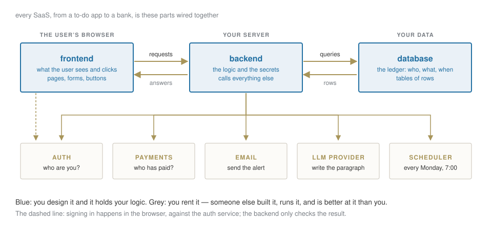
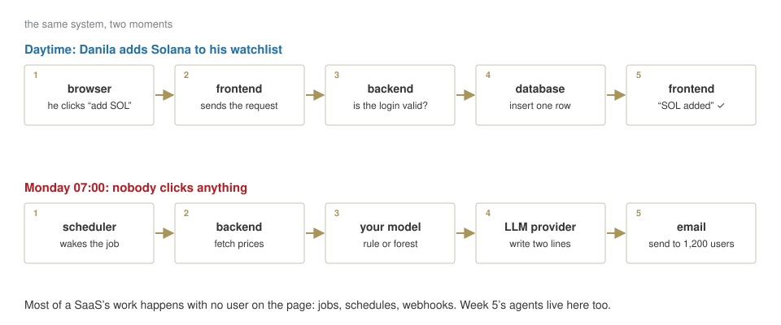
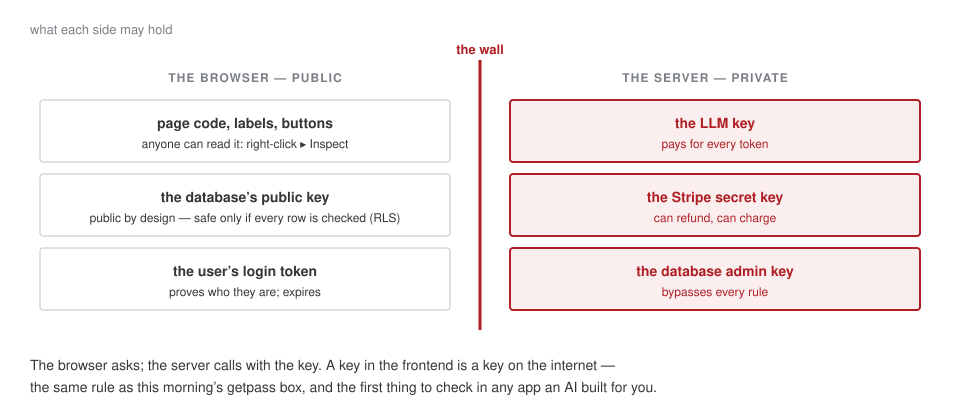
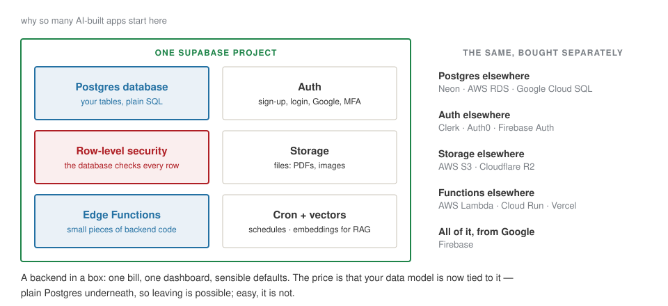
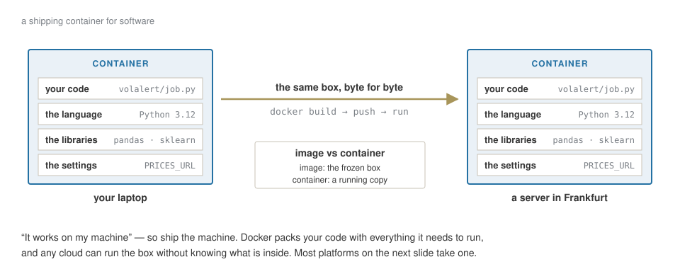
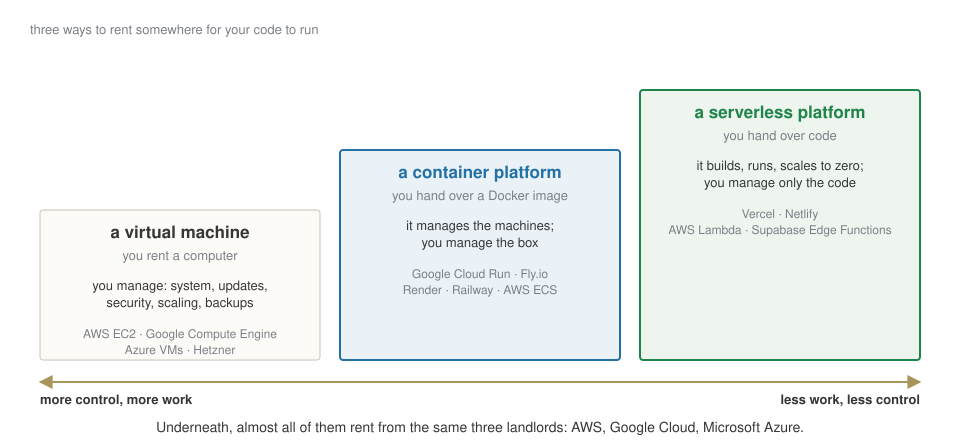
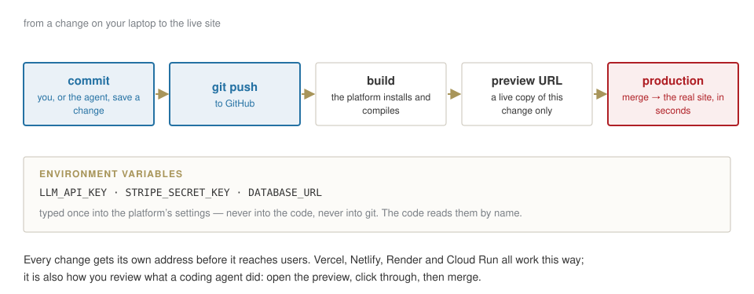
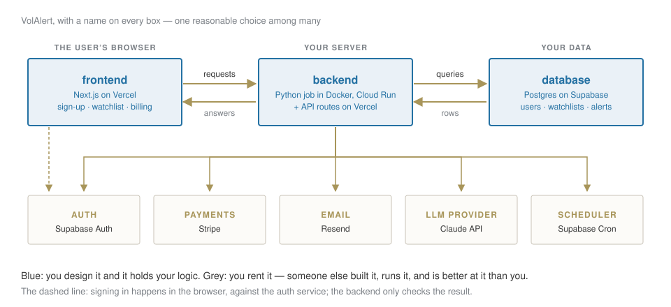
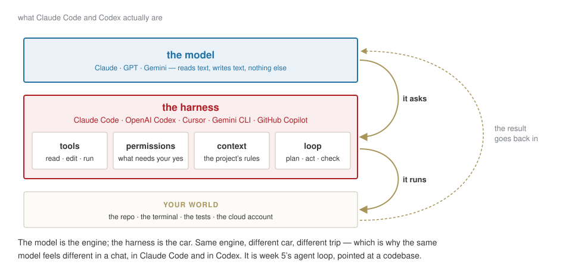
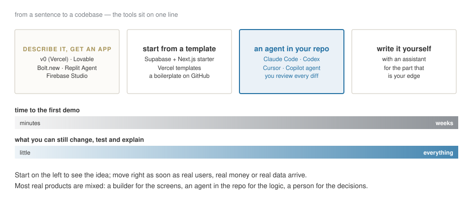

Week 3 · companion deck · what a product is made of, and who writes each part
AI for Business and FinTech · European School of Economics, Florence
This morning you built a model and judged it. A model is not a product.
Your capstone will be a small product, and in December you will have to say what it is made of, what it costs, and what could go wrong. Today: the parts of any software-as-a-service, who builds each one, and which one you must never hand over.
You will not write most of it. An agent will write some, services will rent you the rest. Your job is to know what each part does — so that you can judge what you are given.
What the user sees
What we already have
What we do not have
everything else. That is this deck.
The skill is not building every part. It is knowing which part is yours.


Everything the user sees and clicks: pages, forms, buttons, the chart of their watchlist.
It runs in the user’s browser, on their machine — not on yours. You send it once; it runs there.
Today it is usually written in React, most often with Next.js. Builders like v0 and Lovable produce exactly this part.
The one rule
Anything in the frontend is public. Anyone can right-click ▸ Inspect and read it — including any key you were careless enough to put there.
The logic and the secrets. It runs on a server you control (or rent).
It decides who may do what, calls the database, calls the LLM, sends the emails, charges the card. In VolAlert, it is also where this morning’s model runs every Monday.
Written in anything: Python (FastAPI) for us; JavaScript in the same Next.js project; small functions that run only when called.
A useful test. For every feature, ask: could a user cheat if this ran in their browser?
“Is this person a paying customer?” — backend.
“Which colour is the button?” — frontend.

Where everything that must be remembered lives: users, their watchlists, every alert sent, every payment.
Almost always Postgres today: tables of rows, queried with SQL.
Why not a spreadsheet? Because a thousand users write to it at the same time; because a payment and its alert must be saved together or not at all; because the database can enforce rules a spreadsheet cannot.
You design the tables. That is a product decision, not a technical one: what you can ask later depends on what you store now.
watchlists |
user_id | asset | added |
|---|---|---|---|
| danila | SOL-USD | 7 Oct | |
| maria | BTC-USD | 2 Oct | |
| danila | ETH-USD | 1 Oct |
Rule written once, in the database: a user may read only the rows where user_id is theirs. Now even if the frontend asks for everything, Danila gets two rows and never sees Maria’s.
In 2025 security researchers found many apps generated by AI builders with this rule switched off: every user’s data, readable by anyone with the public key. The app looked finished. The first question to ask of any AI-built app: is row-level security on, on every table?
Two different questions:
Never build the first one yourself. Password storage, resets, Google sign-in, MFA, account takeover: it is a speciality, and the services are better at it than any team you will hire.
Supabase Auth · Clerk · Auth0 · Firebase Auth.
The second one is yours. Who may see what is your business rule — written in the backend and in row-level security.

| you need to… | rent it from | why not build it |
|---|---|---|
| take payments, monthly | Stripe; Paddle or Lemon Squeezy if you want them to handle EU VAT for you | cards, fraud, refunds, invoices, tax |
| send email | Resend · Postmark · Amazon SES | landing in the inbox, not in spam, is a craft |
| know what users do | PostHog · Google Analytics | — |
| know when it breaks | Sentry | you will not be watching at 3 a.m. |
| run things on a schedule | Supabase Cron · Vercel Cron · GitHub Actions | — |
Each is a few lines of code in your backend and a key in your settings. Each is also a company that now holds some of your users’ data — which is a GDPR question, not a technical one.
Directly from who trains the model: Anthropic, OpenAI, Google. What you did this morning.
Through your cloud: Claude and others on AWS Bedrock, Google Vertex AI, Microsoft Azure. Same models, billed on the cloud account you already have, with its contracts and its EU regions.
Three rules, whichever you pick:
USAGE;

AWS, Google Cloud, Microsoft Azure. Vercel, Supabase, Render and most of the names in this deck are, underneath, renting from them — and adding the part that makes it easy.


Why a separate Python job for the model? Because the forest needs pandas and scikit-learn, and a Docker image on Cloud Run is the simplest place for them. Everything else stays in the Next.js project on Vercel and in Supabase.
Which raises two questions: what exactly is the thing writing it — and how much of the product should you let it write?

| what it is | why you care | |
|---|---|---|
| tools | read files, edit them, run commands, search | it can test what it wrote — or delete what it should not |
| permissions | which actions need your yes | the difference between an assistant and an incident |
| context | a rules file in the repo: CLAUDE.md, AGENTS.md |
your conventions, written once, read every time |
| sandbox | where it runs: your laptop, a container, the cloud | what it can reach if it goes wrong |
| loop | plan → act → check the result → again | it can work for an hour unattended — check what it did, not what it says it did |
Claude Code and Codex are harnesses: the same idea, from Anthropic and OpenAI. Cursor and GitHub Copilot put one inside an editor. The model inside can often be swapped; the habits you build around it cannot.

v0, Lovable, Bolt, Replit — in minutes:
That is real value: an idea you can click beats a slide.
What is still yours, and they will not tell you is missing:
The demo is the first 80% of the look and the first 20% of the work.
Everything else can be generated, rented or delegated. These five are what makes it your product — and what the capstone is graded on.
PAPER · ten minutes
Take your capstone idea, or VolAlert if you have none yet.
A SaaS is a few parts you write and many you rent; the secrets live on the server.
Docker ships the machine; platforms run it for you; the cloud landlords are underneath.
Builders and agents write the code; the question, the data, the test and the money stay yours.
AI for Business & FinTech · ESE Florence